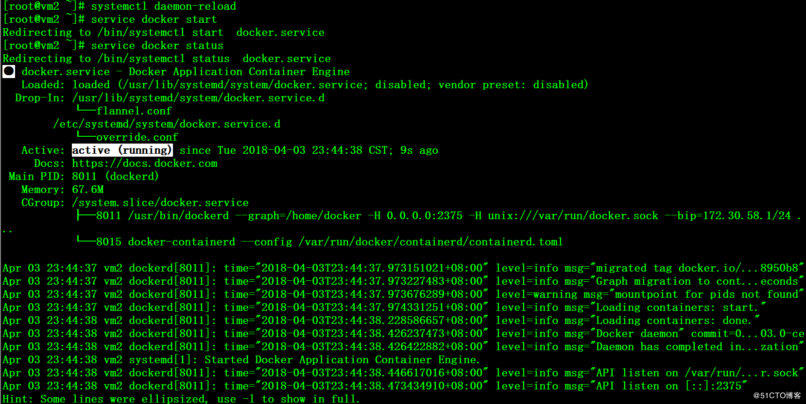
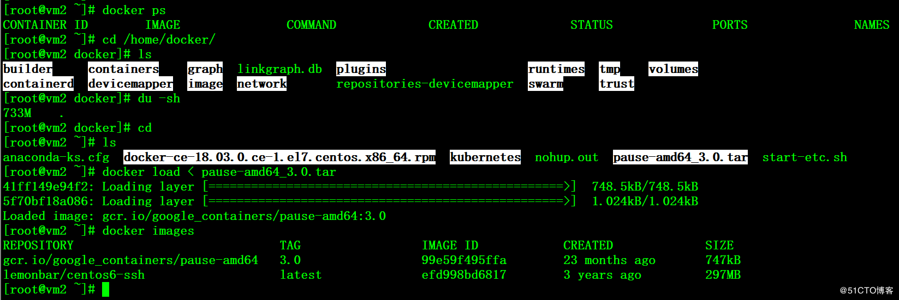
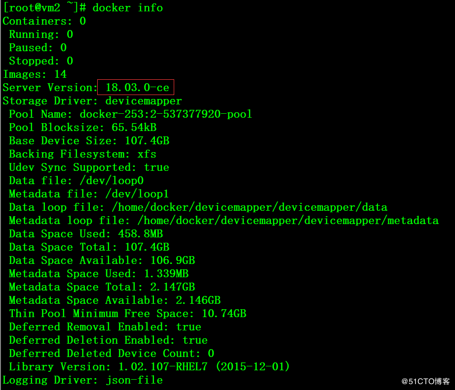

# yum remove docker docker-client docker-client-latest \
docker-common docker-latest docker-latest-logrotate \
docker-logrotate docker-selinux docker-engine-selinux docker-engine
# wget \
https://download.docker.com/linux/centos/7/x86_64/stable/Packages/docker-ce-18.03.0.ce-1.el7.centos.x86_64.rpm
# yum -y localinstall docker-ce-18.03.0.ce-1.el7.centos.x86_64.rpm
# mkdir -p /etc/systemd/system/docker.service.d/
# cat /etc/systemd/system/docker.service.d/override.conf
[Service]
ExecStart=
ExecStart=/usr/bin/dockerd --graph=/home/docker -H 0.0.0.0:2375 -H unix:///var/run/docker.sock $DOCKER_NETWORK_OPTIONS
# cat /etc/docker/daemon.json
{"registry-mirrors": ["https://pee6w651.mirror.aliyuncs.com"],
"live-restore": false
}
# systemctl daemon-reload
# service docker start
# service docker status

可以看到drop-in里面有引用flannel.conf配置文件
# docker ps
# cd /home/docker/
# ls
# du -sh
# docker load < pause-amd64_3.0.tar
# docker images

# docker info
# systemctl enable docker

可以根据实际需要修改docker的storage driver类型，推荐使用overlay2，相关信息可参考如下文档：
https://www.cnblogs.com/hahp/p/6519786.html
http://dockone.io/article/1513